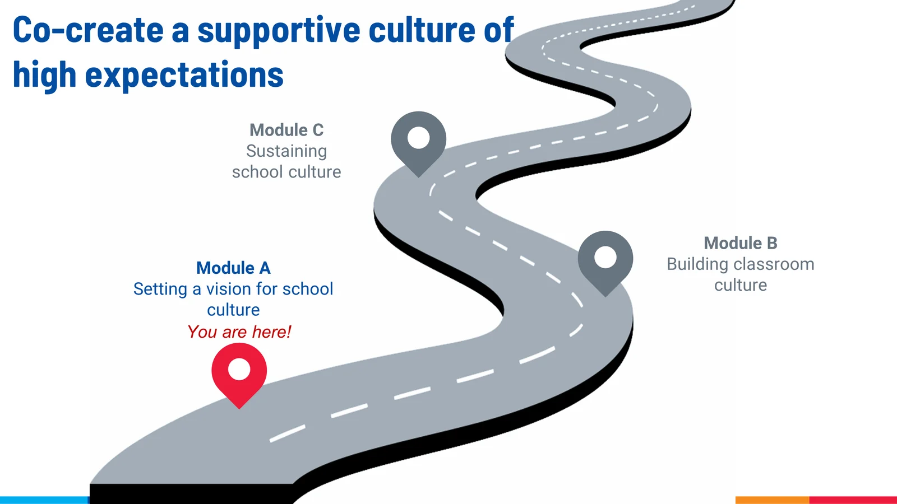
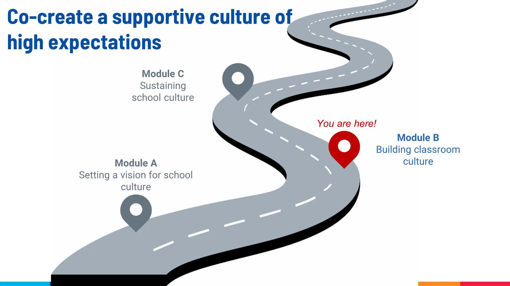
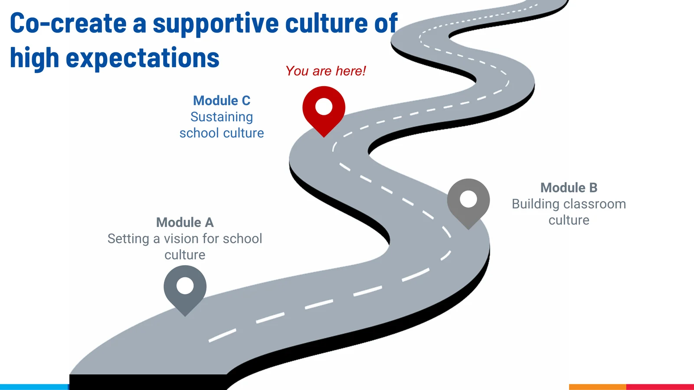

How can we support school leaders to set a culture of high expectations?
Training packets
This curriculum is arranged into ten training sessions, each lasting up to two hours. All sessions are written to work as both virtual and in-person sessions.
Module A
Setting a Vision for School Culture
In Module A, we explore the importance of school culture, and the role that school leaders play in shaping school culture so that it is conducive for learning and growth. We look at the powerful role that teacher expectations play in learning, and explore how we might foster a culture of high expectations. We also consider how to ensure that the school culture is supportive, and we look at the critical role of relationships in building a supportive culture of high expectations. At the end of the Module, we think about how to engage teachers in co-creating the culture that we want to see.

- Introduction to School CultureOpen ↗
Participants learn how beliefs, norms, and behavior shape school culture. They consider the culture of their own school, and explore culture with two contrasting case studies.
Objectives, key mindset and key questions
Session Objectives
- Explain what culture is.
- Reflect on the importance of school culture.
- Describe how school leaders can shape school culture.
Key Mindset
School leaders are the guardians of school culture and must have a clear vision for it.
Key questions to help you consider how to adapt and implement the session
- What are some key cultural expectations in your country that might influence school culture?
- Is school culture already seen as part of school leadership - or will it be a somewhat surprising topic for participants?
- High ExpectationsOpen ↗
Participants learn about how teacher beliefs influence teacher behaviors and student outcomes, and consider how they may create routines, habits, and systems that reflect high expectations for all.
Objectives, key mindset and key questions
Session Objectives
- Explain the link between teacher expectations and student performance.
- Describe critical aspects of a culture of high expectations.
- Explore how to integrate high expectations into school culture.
Key Mindset
All students and teachers can meet high expectations when given appropriate support.
Key questions to help you consider how to adapt and implement the session
- In your setting, do teachers, and school leaders generally have high expectations for students?
- Are there certain groups of students who teachers and school leaders typically have low expectations of?
- Creating a Supportive CultureOpen ↗
Participants reflect on the importance of a culture not only being one of high expectations - but one that is full of appropriate support, as well.
Objectives, key mindset and key questions
Session Objectives
- Explain how we can support students to meet high expectations.
- Reflect on the existing school systems that support students to meet high expectations.
Key Mindset
All students and teachers can meet high expectations when given appropriate support.
Key questions to help you consider how to adapt and implement the session
- Do teachers and school leaders see themselves as responsible for a child’s learning?
- Relationships as the Heart of School CultureOpen ↗
Participants consider the critical role of relationships as the glue that holds a school together. They think of ways that they can build relationships with students and teachers.
Objectives, key mindset and key questions
Session Objectives
- Explore the idea of belonging, and its importance to children.
- Recognize the value of listening to what students and teachers have to say.
- Reflect on how professional relationships set the foundations for a positive school culture.
Key Mindset
Supportive school cultures emerge when levels of trust are high, when relationships are strong, and when all community members have a voice.
Key questions to help you consider how to adapt and implement the session
- Do school leaders typically spend much time talking to students?
- What sort of relationships do school leaders typically have with teachers - are they warm and approachable, or do they tend to be unapproachable?
- Engaging Teachers with School CultureOpen ↗
Participants reflect on the school culture they would like to build, and consider how they can share that with teachers and include them in creating a supportive culture of high expectations.
Objectives, key mindset and key questions
Session Objectives
- Assess your school culture and consider how it can be shaped.
- Plan how to engage teachers in supporting and transforming school culture.
Key Mindset
School leaders are the guardians of school culture and must have a clear vision for it.
Key questions to help you consider how to adapt and implement the session
- How challenging might school leaders find it to include teachers in creating a new school culture?
Module B
Building Classroom Culture
In Module B, we look at classroom culture, and how we can support teachers to develop a supportive culture of high expectations in their own classrooms. We look at how positive language and respect are essential to help children feel secure enough to learn. Then, we consider how to manage behavior effectively and positively, by setting clear expectations, giving specific praise and instructions, and correcting inappropriate behavior firmly but kindly.

- Developing Classroom CultureOpen ↗
Participants reflect on the culture of the classrooms in their school, particularly in terms of the way that teachers use language and routines to create a positive, safe and purposeful environment.
Objectives, key mindset and key questions
Session Objectives
- Reflect on the link between classroom culture and learning.
- Describe how positive language and respect contribute to a supportive classroom environment.
- Explain how routines for learning and behavior can help build a supportive classroom environment.
Key Mindset
All students and teachers can meet high expectations when given appropriate support.
Key questions to help you consider how to adapt and implement the session
- What does a typical classroom environment feel like?
- Do teachers typically treat students with respect, and communicate their expectations clearly and non-violently?
- Managing BehaviorOpen ↗
Participants consider the importance of student behavior in creating a classroom culture that allows learning. They learn about five practices that help teachers to manage behavior positively and proactively.
Objectives, key mindset and key questions
Session Objectives
- Assess behavior management practices across the school.
- Reflect on the effects of, and reasons for, poor behavior management practices.
- Discuss how to manage behavior through five core behavior management practices.
Key Mindset
Supportive school cultures emerge when levels of trust are high, when relationships are strong, and when all community members have a voice.
Key questions to help you consider how to adapt and implement the session
- What behavior management methods do teachers tend to rely on?
- Does corporal punishment occur in schools?
- Socioemotional LearningOpen ↗
In this session, participants learn about the importance of and the competencies of socioemotional learning.
Objectives, key mindset and key questions
Session Objectives
- Explain the importance of socioemotional learning.
- Explain the competencies of socioemotional learning.
- Consider how to integrate socioemotional learning into school life.
Key Mindset
Supportive school cultures emerge when levels of trust are high, when relationships are strong, and when all community members have a voice.
Key questions to help you consider how to adapt and implement the session
- How is socioemotional learning understood and supported in your context?
Module C
Sustaining School Culture
School culture is not something that is never ‘finished' for school leaders; it needs to be monitored and nurtured constantly. In Module C, we explore how to sustain school culture and even include the wider community in it.

- Sustaining CultureOpen ↗
Participants reflect on the reality that culture is not something that ‘gets done’ - it needs constant maintenance, monitoring, and adjustment. In this session, participants review some ways that school culture can be weakened, and consider how to sustain the right culture.
Objectives, key mindset and key questions
Session Objectives
- Assess the current culture in your school.
- Discuss how school culture can be weakened.
- Reflect on systems to monitor and celebrate classroom culture.
Key Mindset
All students, irrespective of their social or economic background, deserve to be supported in meeting big goals that allow them to learn and succeed in life.
Key questions to help you consider how to adapt and implement the session
- How have participants responded to the introductory sessions on school culture - do they see culture as something they are responsible for?
- Engaging Families in Building School CultureOpen ↗
Participants consider the role of families as critical stakeholders who must be included in school culture work. They reflect on the reasons why it can be hard to engage families in school life, and consider some new ways to engage families in building a supportive culture of high expectations.
Objectives, key mindset and key questions
Session Objectives
- Explain the value of engaging families and community members in building school culture.
- Discuss why it can be challenging for families to engage in the culture and life of the school.
- Reflect on ways to engage families and community members in the culture and life of the school.
Key Mindset
Supportive school cultures emerge when levels of trust are high, when relationships are strong, and when all community members have a voice.
Key questions to help you consider how to adapt and implement the session
- How do school leaders and teachers typically regard the role of families in their child’s education?
- Do families typically see themselves as responsible for their children’s education, and capable of supporting it?